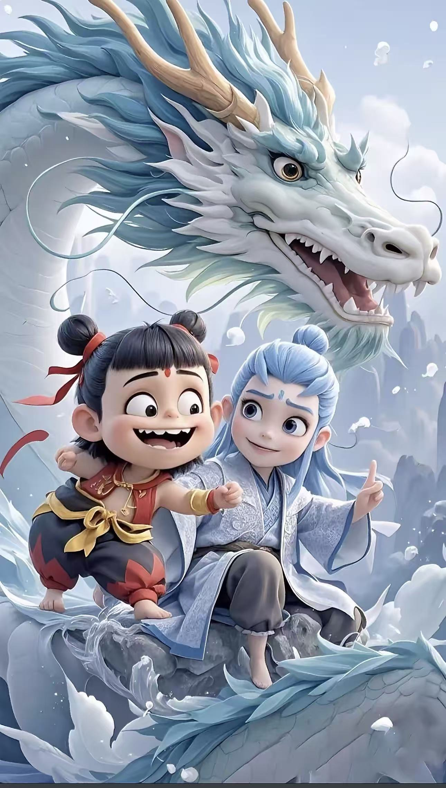
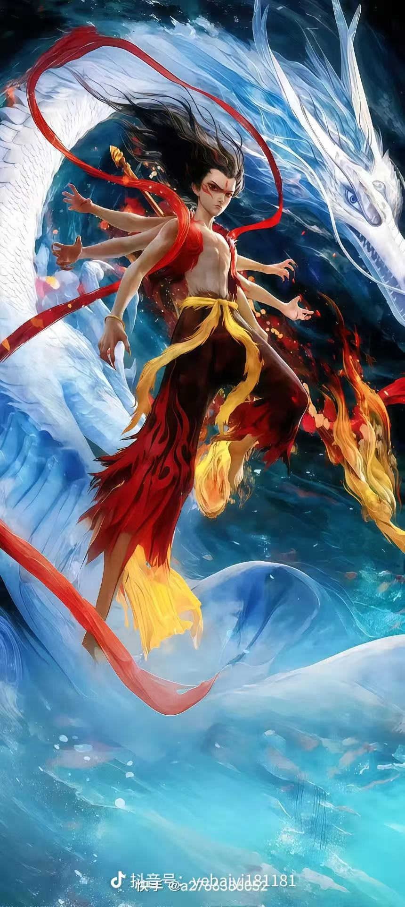
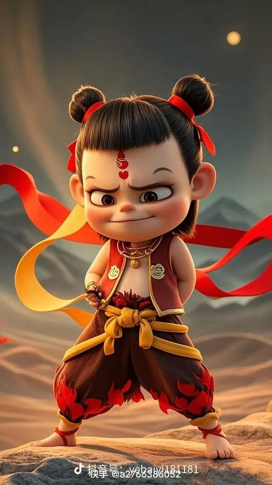
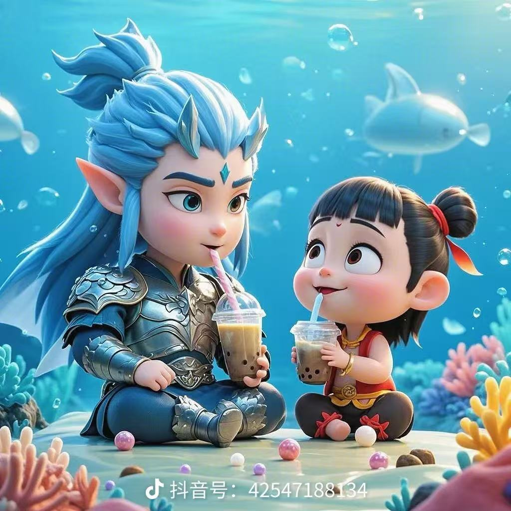
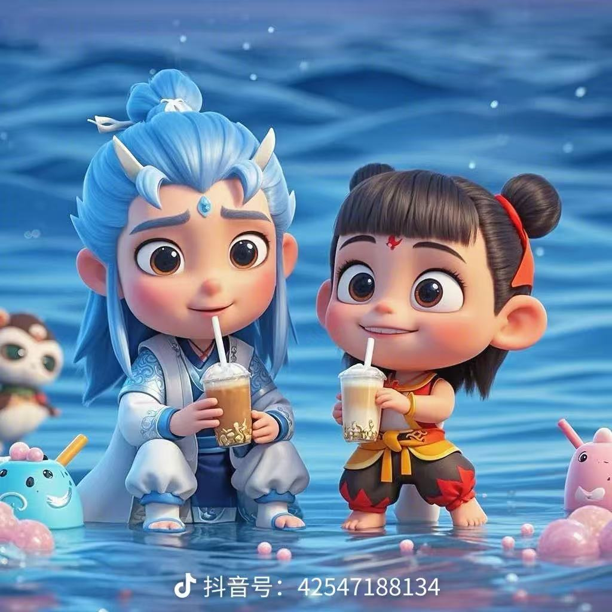
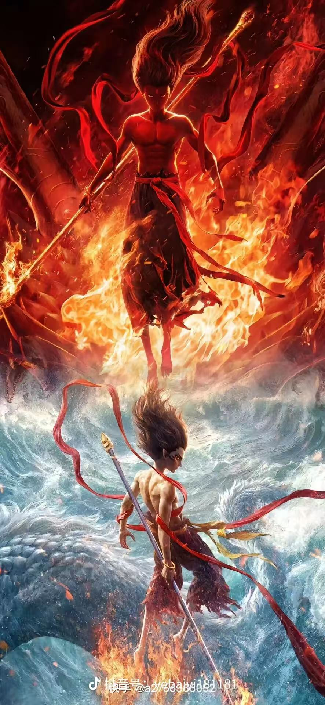
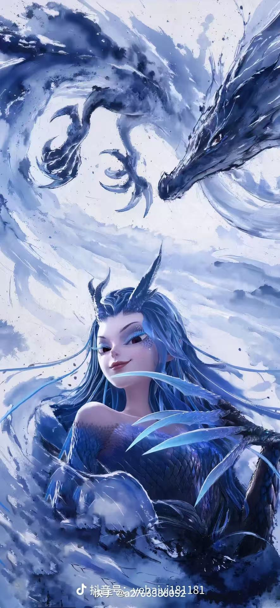

哪
哪吒
陈塘关李靖第三子
灵珠转世，天生神勇。身披混天绫、手戴乾坤圈，脚踏风火轮，性情刚烈、敢作敢当，是“少年英雄”的经典形象。
中国古典神话 · 封神演义
脚踏风火闯东海 · 一身是胆少年郎
哪吒是中国古代神话传说中的少年英雄，出自明代许仲琳所著神魔小说《封神演义》。他本是乾元山金光洞的灵珠子转世，投胎为陈塘关总兵李靖的第三子，自幼拜太乙真人为师，身怀混天绫、乾坤圈等法宝，天生神勇。
一年盛夏，哪吒到东海边戏水，将混天绫在水中一展，刹那间红光满海、波涛翻涌，惊动了海底龙宫。由此引出一段千古流传的传说——哪吒闹海：他大战龙王三太子敖丙，不惧强权、敢作敢当，最终为不连累父母而剔骨还父，又得太乙真人以莲花重塑肉身，重生归来。


乾元山金光洞的灵珠子奉元始天尊法旨下凡，投胎为陈塘关总兵李靖第三子，太乙真人为他取名“哪吒”。
盛夏酷暑，哪吒到东海边洗澡，混天绫入水，红光映海、波浪滔天，惊动了海底龙宫。
巡海夜叉与龙王三太子敖丙先后前来问罪，哪吒毫不畏惧，用混天绫拘住敖丙，将其打败后还抽去了龙筋。
东海龙王敖广痛失爱子，勃然大怒，兴师问罪陈塘关，逼迫李靖交出哪吒，并威胁水淹全城。
为不连累父母与满城百姓，哪吒挺身而出，一人做事一人当，当众自刎，剔骨还父、削肉还母。
太乙真人以莲花、荷叶与莲藕为身，为哪吒重塑肉身。重生后的哪吒脚踏风火轮、手持火尖枪，神通更胜从前。

哪
陈塘关李靖第三子
灵珠转世，天生神勇。身披混天绫、手戴乾坤圈，脚踏风火轮，性情刚烈、敢作敢当，是“少年英雄”的经典形象。
丙
东海龙王三太子
东海龙宫中备受宠爱的三太子，骄横跋扈。因哪吒搅动海水而前来兴师问罪，最终败于哪吒之手。
龙
四海龙王之首 · 敖广
掌管东海风雨，威风八面。爱子被杀后悲怒交加，兴师问罪陈塘关，是哪吒最强大的对手之一。
仙
乾元山金光洞神仙
哪吒的师父，传授哪吒法术与法宝，危急时刻出手相助；哪吒死后，又以莲花为其重塑肉身。
靖
陈塘关总兵 · 哪吒之父
为人谨慎严厉，面对龙王的威逼左右为难。后得道成仙，被世人尊称为“托塔李天王”。
绫
金光洞镇洞之宝，一条七尺红绫，可长可短、能自动缚敌；在水中一展，便搅得江海翻腾。
圈
金色圆环法宝，坚硬无比，随手掷出如雷电之势，百发百中，是哪吒最趁手的法宝之一。
枪
枪尖带火的神兵，配合风火轮的冲势，冲锋陷阵、威力惊人。
轮
一双神轮踏于足下，风助火势、火借风威，可日行千里，腾云驾雾。
“哪吒闹海”的故事历经数百年传承，从古典小说走向戏曲舞台、动画银幕，陪伴了一代又一代中国孩子成长，成为中华优秀传统文化中一颗闪亮的明珠。
| 作品 | 年代 | 形式 | 简介 |
|---|---|---|---|
| 《封神演义》 | 明代 | 长篇小说 | 许仲琳编撰，“哪吒闹海”故事的主要文献来源 |
| 《哪吒闹海》 | 1979年 | 动画电影 | 上海美术电影制片厂出品，中国动画史上的经典之作 |
| 《哪吒之魔童降世》 | 2019年 | 动画电影 | “我命由我不由天”，票房口碑双丰收 |
| 《哪吒之魔童闹海》 | 2025年 | 动画电影 | 哪吒系列续作，再度掀起国产动画热潮 |



